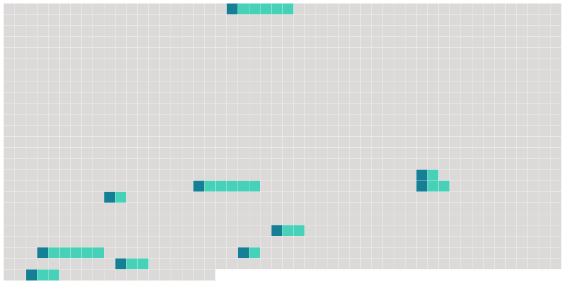

Longueur nb maillons : 10 mentions |
 |
Chapitre II : Dispositions relatives à la désignation et à la formation des citoyens assesseurs [14 phrases]
Paragraphe 2 : Etablissement de [la liste] Conformément à l'article 10-5, elle exclut de la liste préparatoire de [la liste annuelle] les personnes mentionnées aux 1 ° à 3 ° de cet article.
Elle exclut en outre provisoirement de [cette liste] les personnes qui n'ont pas adressé à son président le recueil d'informations dans le délai prévu au 1 ° de l'article R. 2-3. [2 phrases]
La commission se réunit à nouveau dans le courant du mois d'octobre pour établir [la liste annuelle] [2 phrases]
Article R2-9
Paragraphe 3 : Retrait de [la liste]
Le premier président de la cour d'appel, après avoir convoqué le citoyen assesseur et l'avoir mis en mesure de présenter ses observations, se prononce sur son retrait de [la liste annuelle] par une décision motivée qui est notifiée par tout moyen à l'intéressé. |
 |
La ressource peut être téléchargée sur la page Ortolang
Si vous avez des questions ou vous voyez des erreurs, merci d'envoyer un mail à silvia.federzoni89@gmail.com
Site développé par S. Federzoni (contact)